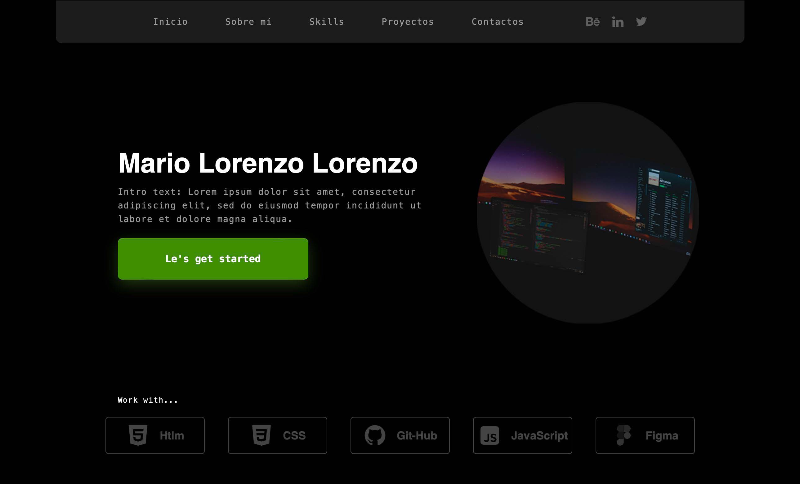

Mario Lorenzo Lorenzo
Desarrollador en formación especializado en frontend, creando interfaces web responsive con HTML, CSS y JavaScript, y aprendiendo scripting con Python.
Explorar proyectos
Mis Proyectos
Proyectos desarrollados mientras aprendo desarrollo frontend, diseño responsive y scripting con Python para seguir mejorando mis habilidades como desarrollador.
Portfolio one - page
Portfolio one - page desarrollada con HTML y CSS, centrada en la maquetación responsive y el diseño de una interfaz moderna y estructurada.
Ver Proyecto
Bike World
Bike World es un proyecto de práctica enfocado en el diseño de tarjetas (cards), llamadas a la acción y formulario de contacto, aplicando HTML y CSS para crear una interfaz clara y visualmente atractiva.
Ver Proyecto
Travel Canarias
Travel Canarias es un proyecto de práctica donde se trabajó el desarrollo de un menú responsive, aplicando HTML y CSS para mejorar la estructura y adaptabilidad de la interfaz.
Ver Proyecto
Portfolio one - page
Enfoque...
Este proyecto comenzó como un desafío personal para poner a prueba los conocimientos adquiridos en poco más de dos meses de aprendizaje en desarrollo frontend. A lo largo de su construcción, he aplicado HTML y CSS para crear una interfaz responsive centrada en la presentación de proyectos y el diseño visual.
Como empezó...
Tecnologías...
Las tecnologías aplicadas en este proyecto son el resultado de los conocimientos adquiridos durante el desarrollo del mismo.
HTML y CSS para la estructura y el diseño responsive de la interfaz. Git y GitHub para el control de versiones. Figma como referencia de diseño, y Photoshop para la edición de imágenes.

Retos...
Los principales retos de este proyecto estuvieron relacionados con la necesidad de recordar y aplicar correctamente los conocimientos adquiridos, asegurando que las distintas partes del código funcionaran de forma coherente. Algunas secciones, como el menú tipo hamburguesa, requirieron un mayor trabajo en CSS y adaptación a diferentes tamaños de pantalla, lo que implicó realizar múltiples ajustes responsive.
Soluciones...
Las soluciones pasaron por reconstruir partes del proyecto desde cero, evitando depender del copiar y pegar de código o del uso de herramientas de apoyo de forma constante. El enfoque se basó en trabajar con apuntes y conocimientos propios, construyendo una estructura sólida, ordenada y bien comentada para facilitar la comprensión y el mantenimiento del código.

Bike World
Adventure
Diseño visual, cards y experiencia de usuario.
Enfoque...
Bike World fue un proyecto de práctica centrado en el diseño de interfaces mediante HTML y CSS, con el objetivo de reforzar conceptos de maquetación, estructura visual y diseño responsive. Se trabajó en la creación de cards, llamadas a la acción y formularios de contacto, buscando una interfaz clara, ordenada y adaptable a distintos dispositivos.